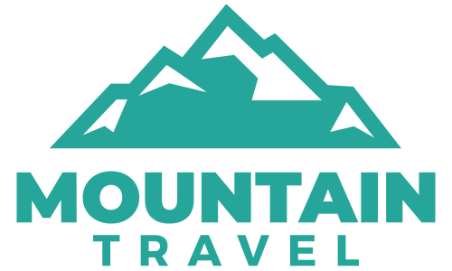

Mountain Travel nace con el espíritu de crear viajes únicos organizados con todo lujo de detalles y diseñados para cubrir los requerimientos de todo tipo de viajero. Si eres de esas personas que buscan vivir una experiencia mágica e inolvidable recorriendo los confines de este planeta, que tienes una idea de cómo quieres hacerlo, de con quien quieres compartirlo, de cuál va ser tu destino y de cuando quieres llevarlo a cabo, entonces ten por seguro que eres un viajero de Mountain Travel.
Al otro lado de la línea, detrás de esta pantalla, hay un infatigable equipo humano con una amplia experiencia en diseñar y organizar proyectos de viaje que, a buen seguro, responderán a tus más altas expectativas. A todos nosotros nos une una misma pasión, la de explorar cada rincón del mundo para descubrir todo aquello que merece la pena atesorar en forma de breves y fugaces instantáneas que se guardarán en nuestro recuerdo eternamente, y esa es una pasión que vamos a compartir contigo. Nuestro dilatado recorrido profesional nos ha permitido llegar a acuerdos con las mejores agencias locales en destino, para poder ofrecerte servicios de calidad incuestionable y experiencias inigualables a un coste realmente competitivo. Entender a la perfección cuáles son tus deseos, necesidades y expectativas, así como el conocimiento exhaustivo de los destinos elegidos. Queremos ofrecerte una perspectiva diferente, opciones distintas al clásico viaje, para que puedas realmente conectar con la gente y su entorno de forma auténtica y original, para que puedas conectar a “tu manera”. Para ello podemos proporcionarte rutas y destinos alternativos en los que experimentar sensaciones únicas y exclusivas. Desde el misticismo de un remoto rincón de Oriente hasta la más concurrida de las metrópolis occidentales, pasando por potentes inyecciones de adrenalina fruto de las actividades más insospechadas que puedas llegar a imaginar. Frente a lo convencional, lo tradicional, te mostraremos lo verdaderamente excepcional.
